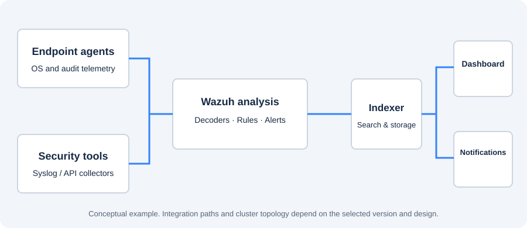

Scope & design
Define what success means for your environment.
- Assets, sources and versions in scope
- Architecture and capacity assumptions
- Use cases and milestones
- Dependencies and explicit exclusions
Delivery approach & examples
Agree the scope, operating responsibilities and acceptance evidence before implementation.
Illustrative architecture
This conceptual example is not a client architecture or evidence of a completed deployment.

Proposed delivery standard
The final statement of work defines the deliverables included in your engagement.
Define what success means for your environment.
Check the complete monitoring workflow.
Agree a controlled implementation approach.
Give the owner a usable operating record.
You engage Moiz Uddin Rafay directly as an independent consultant. Any additional delivery arrangements should be agreed before access is provided.
The engagement should define client-controlled access, permitted data handling, confidentiality terms, change approvals and access removal at handover. Do not send credentials or private security logs through the public enquiry form.
Support hours, response arrangements and responsibilities are defined in the proposal. A staffed 24/7 SOC is a separate service commitment.
Agree acceptance, documentation ownership, knowledge transfer, any post-delivery support period and further maintenance before work starts.
Contracting information, project scope, confidentiality requirements, delivery responsibilities and relevant professional evidence can be discussed during discovery. Availability depends on the engagement and requested documentation.
A clear starting point
A new deployment, a broken integration, noisy alerts or a team that needs training.
Project consulting · Independent training · Scoped engineering support